Laos is not a country that tries to impress instantly. There is no feeling of endless spectacle here like in Bangkok, no polished tourist staging like on some Thai islands, and no constant visual noise of major Asian megacities.
Laos reveals itself differently.
In the silence of early mornings in Luang Prabang, in the blue haze of Vang Vieng’s limestone mountains, in the strange stillness of the Plain of Jars, and in the golden light that settles over the Mekong every evening.
For travelers who have already explored Southeast Asia’s major destinations, Laos feels like a rare discovery. The country is quieter, deeper, and more enigmatic than its neighbors.
It asks for time, but in return offers something that has nearly disappeared from many popular travel routes: the feeling of genuine travel, space, atmosphere, and the sense that it is still possible to discover places that have not yet become scenery built entirely around tourism.
It is precisely the combination of almost untouched nature, ancient temples, karst landscapes, a slower rhythm of life, and the atmosphere of old Southeast Asia that makes Laos one of the region’s most unusual destinations.
Here, the journey is remembered not because of one single attraction, but because of the constant feeling of space, silence, and beauty surrounding everything: morning mist above the mountains, golden monasteries, jungle roads, boats drifting along the Mekong, and ancient ruins that still remain part of a living landscape rather than a tourist backdrop.
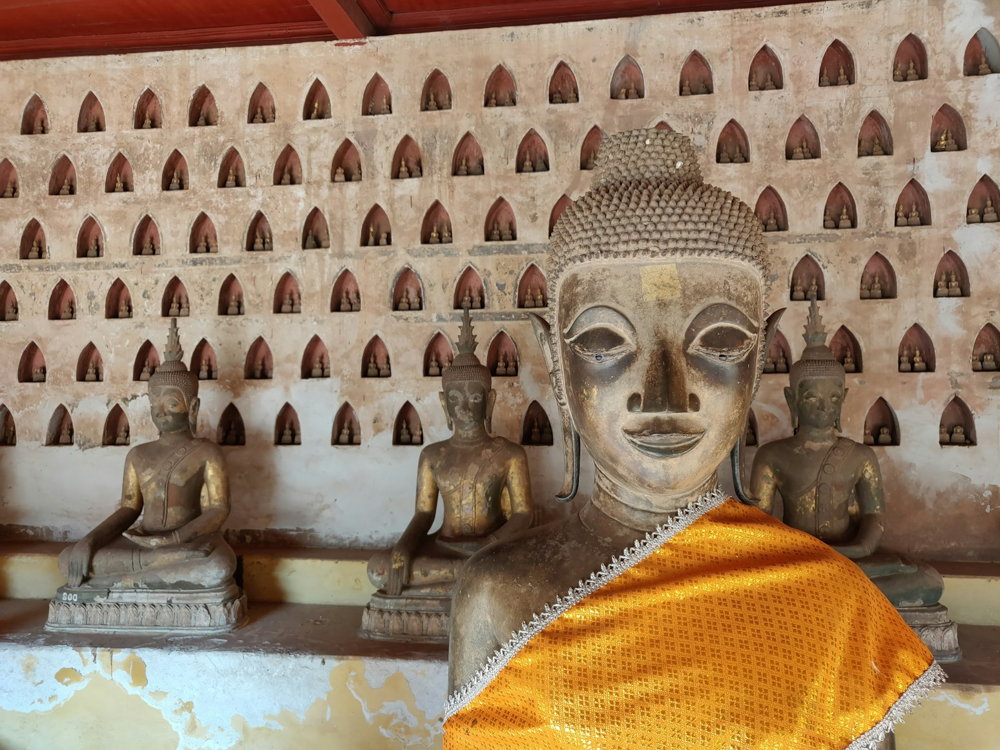
As of 2026, Laos has four UNESCO World Heritage Sites: the historic town of Luang Prabang, Vat Phou and the Ancient Settlements within the Champasak Cultural Landscape, the Plain of Jars, and Hin Nam No National Park, included within the transboundary heritage site shared with Vietnam’s Phong Nha–Ke Bang National Park.
The Best Route Through Laos
Laos reveals itself best in a journey from north to south.
The route begins among the temples and colonial streets of Luang Prabang, continues toward the mysterious landscapes of the Plain of Jars, returns to the limestone mountains of Vang Vieng and the calm atmosphere of Vientiane, before gradually descending into the wilder and more untouched regions of central Laos — Khammouane and Hin Nam No.
The final part of the journey unfolds along the southern Mekong: ancient Vat Phou, the green Bolaven Plateau, and the slow-moving 4000 Islands, where Laos seems to dissolve completely into rivers, jungle, and warm tropical light.
For this route, it is ideal to allow around three weeks, or closer to a month if traveling at a slower pace and staying longer in places that are difficult to leave.
Laos is not a country that rewards rushing.
Here, the journey itself becomes part of the experience: long roads through limestone mountains, crossings along the Mekong, pauses in small towns, and evenings spent on terraces overlooking mist-covered rivers.
The less hurried the pace, the more deeply Laos reveals its atmosphere.
The route can theoretically be shortened to two weeks, but Laos loses much of its magic when approached too quickly.
Days 1–5: Luang Prabang
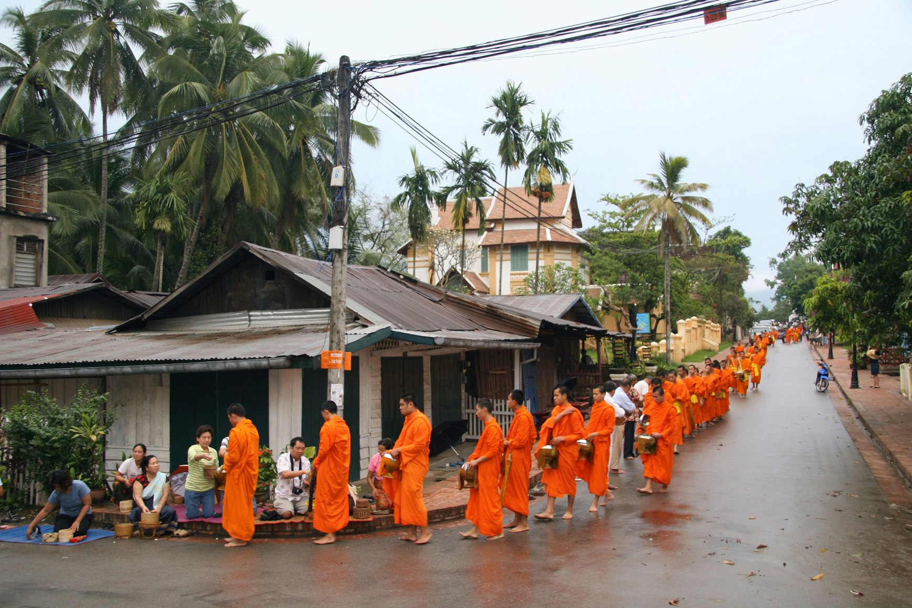
Luang Prabang is the ideal beginning to the journey.
It is the most beautiful and atmospheric city in Laos and one of the most refined historic towns in Asia. Set between the Mekong and Nam Khan rivers, it combines Buddhist monasteries, traditional Lao wooden houses, and French colonial architecture in a remarkably harmonious way.
UNESCO describes the town as a rare fusion of traditional Lao urban structure and European colonial influence.
Mornings in Luang Prabang begin very early.
Before the cafés open, before the heat and noise arrive, monks in saffron robes move quietly through the old streets while the city seems almost motionless.
The most important temple here is Wat Xieng Thong. Not simply because it is beautiful, but because it captures the spirit of Luang Prabang better than anywhere else: calmness, elegance, and a slow passage of time.
One day should be dedicated to wandering through the old town, another to Kuang Si Falls, and another to a Mekong cruise toward the Pak Ou caves.
Kuang Si is not part of UNESCO, but places like this are what make the journey visually unforgettable: turquoise cascades, limestone terraces, and dense jungle surrounding the water.
The best place to stay is either in the old town or close to the river. Luang Prabang reveals itself most beautifully when everything can be explored on foot, when afternoons are spent resting from the heat, and evenings begin again as the temples turn gold in the sunset light.
Extension to the Route: Nong Khiaw
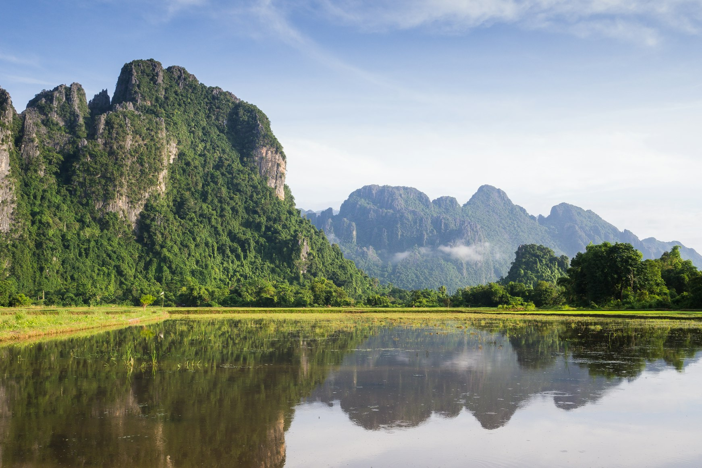
If time allows, it is worth leaving Luang Prabang for two or three days in Nong Khiaw.
This is one of the most beautiful natural regions of northern Laos: limestone mountains, mist drifting above the Nam Ou River, dramatic viewpoints, and an almost complete absence of mass tourism.
Nong Khiaw is not a UNESCO site, but it often becomes one of the strongest emotional impressions of the entire journey.
Days 6–8: The Plain of Jars
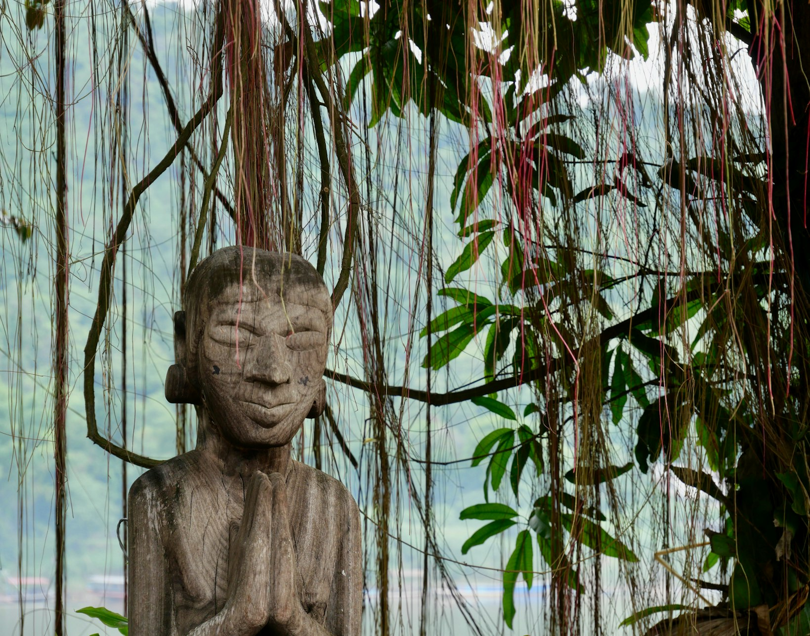
The Plain of Jars is the most mysterious UNESCO site in Laos.
Located in Xiengkhuang Province, it consists of enormous stone jars scattered across hills and open fields. The site was added to the UNESCO World Heritage List in 2019.
This is not a postcard-style attraction.
Its beauty feels stranger and more atmospheric. The landscape appears empty and wind-swept, while the megaliths themselves create the feeling of something ancient and not fully understood.
They are believed to be connected to Iron Age burial rituals.
The best base is the town of Phonsavan.
Visiting the main sites with a guide is recommended not only for historical context, but also because the region suffered heavily during the war, and unexploded ordnance remains an issue in some areas.
The Plain of Jars leaves such a strong impression precisely because it carries both ancient history and the memory of much more recent tragedies.
Days 9–11: Vang Vieng
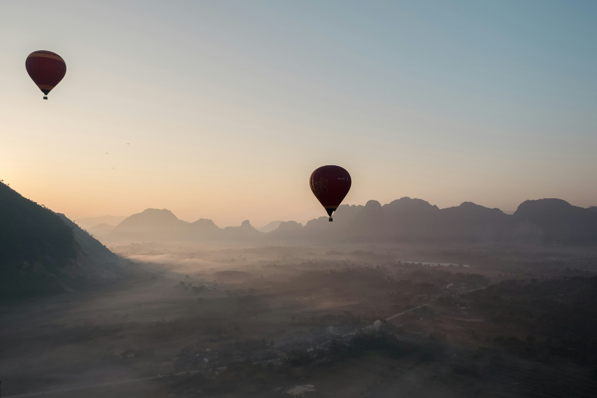
After the Plain of Jars, Vang Vieng returns visual pleasure to the journey.
Limestone cliffs, blue lagoons, rice fields, river mist, and dramatic mountain silhouettes make this one of the most beautiful natural regions in Laos.
Vang Vieng was once known primarily for parties and uncontrolled tourism, but over recent years the town has changed significantly, becoming calmer and far more visually appealing.
The best days here revolve around nature: viewpoints, kayaking, caves, and long evenings in hotels overlooking the mountains.
A sunrise hot air balloon flight is one of the most memorable experiences in Laos.
The Laos-China Railway has made travel between Luang Prabang, Vang Vieng, and Vientiane significantly easier and more comfortable.
Days 12–13: Vientiane
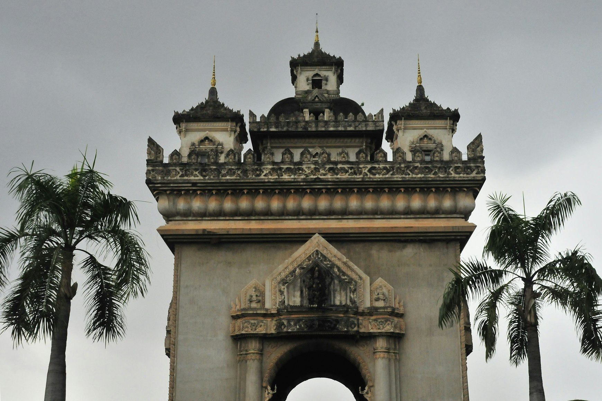
Vientiane is best understood as a calm pause between the north and south of the country rather than as the main purpose of the trip.
It is one of the most relaxed capitals in Asia.
In a single day, it is worth visiting the golden stupa of Pha That Luang, the Patuxai monument, and the Mekong riverside at sunset.
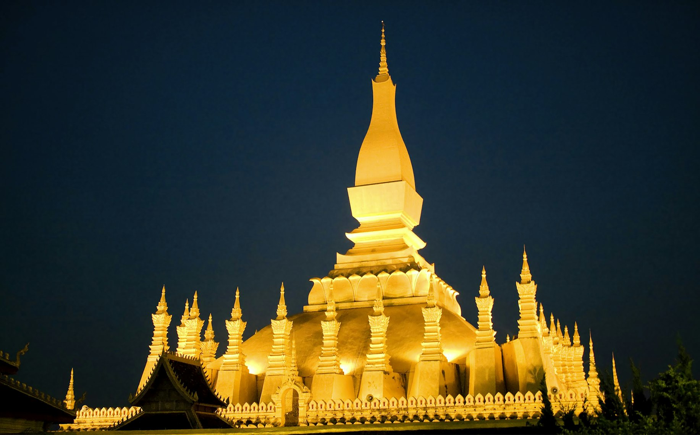
After the mountain landscapes of the north, the capital offers a moment to slow down before entering the wilder and more remote regions of central Laos.
Days 14–16: Khammouane and Hin Nam No National Park
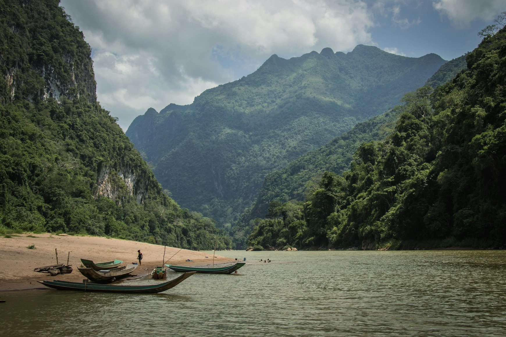
This part of the route is particularly interesting because many older guidebooks barely included it.
Yet this is where Laos’s newest UNESCO site is located.
In July 2025, Hin Nam No National Park was officially added to the World Heritage List as part of a transboundary site together with Vietnam’s Phong Nha–Ke Bang. It became Laos’s first natural UNESCO World Heritage site.
Hin Nam No is an immense karst world of caves, jungle, limestone towers, and nearly untouched natural landscapes.
UNESCO describes the region as one of the most remarkable limestone karst systems on the planet.
The practical base is usually Thakhek. From here, travelers explore the famous Thakhek Loop and visit Kong Lor Cave, one of the most spectacular cave systems in Southeast Asia.
This is a wilder and far less tourist-oriented Laos, which is exactly why experienced travelers value the region so highly.
Days 17–19: Pakse, Champasak and Vat Phou
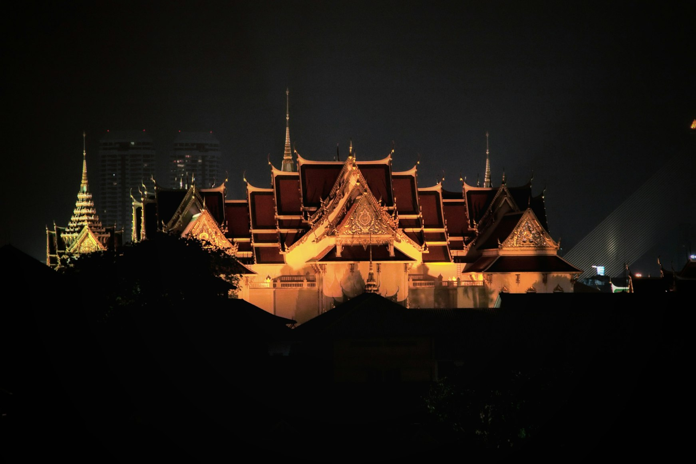
Southern Laos brings the journey back into ancient history.
Vat Phou was added to the UNESCO World Heritage List in 2001 as an ancient Khmer temple complex and cultural landscape within Champasak.
Unlike the monumental scale of Angkor Wat, Vat Phou feels quieter and more meditative.
The temple rises toward the mountainside, frangipani trees grow among the ruins, and the entire atmosphere feels almost detached from time.
Travelers can stay either in Pakse or in the more atmospheric town of Champasak.
The best time to visit is early morning, before the ancient stones absorb the day’s heat.
Extension: The Bolaven Plateau
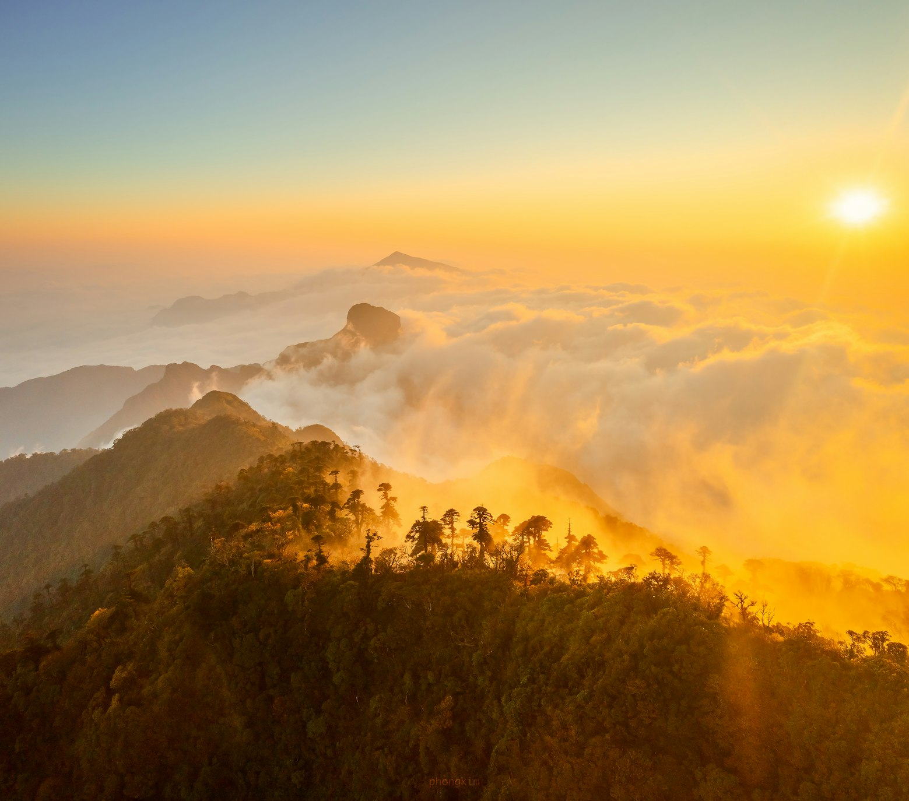
The Bolaven Plateau is one of the best natural additions to the southern route.
Here you find enormous waterfalls, coffee plantations, cooler temperatures, and long green roads through jungle landscapes.
After the ancient temples, Bolaven brings freshness and nature back into the journey.
Days 20–23: The 4000 Islands
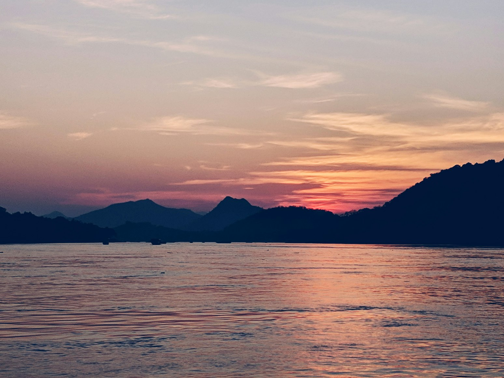
The perfect final stop of the route is the 4000 Islands — Si Phan Don.
This is not a UNESCO site, but many travelers describe it as the emotional climax of Laos.
Here, the Mekong breaks into countless islands, channels, and sandbanks.
Life slows down even further.
What matters here is not a checklist of attractions, but a particular state of mind: bicycles beneath palm trees, riverside bungalows, sunsets over the Mekong, and the feeling that time has almost stopped.
After Luang Prabang, the Plain of Jars, Hin Nam No, and Vat Phou, the 4000 Islands provide a soft and perfect ending to the journey.
A Journey Built Around the Country’s Rhythm
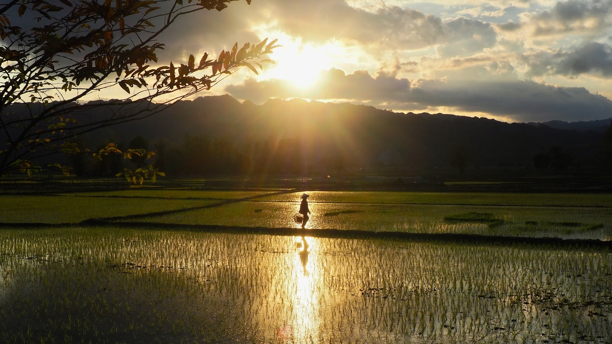
This route is designed so that Laos gradually reveals itself in full — from the temples and colonial streets of the north to the nearly untouched river landscapes of the south.
The trip does not feel like disconnected points on a map, but rather like one continuous journey through completely different moods of the country: the calm spirituality of Luang Prabang, the mystery of the Plain of Jars, the limestone mountains of Vang Vieng, the wild landscapes of central Laos, the ancient atmosphere of Vat Phou, and the slow Mekong flowing through the 4000 Islands.
At the same time, the route covers all UNESCO sites in Laos while including the places without which the country would feel incomplete: Nong Khiaw and its mist-covered mountains, the turquoise pools of Kuang Si, the caves of Kong Lor, the coffee plantations of the Bolaven Plateau, and the southern islands of the Mekong.
It is this combination of ancient history, nature, and slow travel atmosphere that makes the journey feel so visually rich and emotionally complete.
The route is also designed with logistics in mind.
Northern Laos can be explored conveniently along the railway connecting Luang Prabang, Vang Vieng, and Vientiane, before gradually moving south without unnecessary backtracking or exhausting transfers.
The longest travel sections are placed in regions where the landscapes themselves become part of the experience.
Because of this, the trip feels less like a sequence of tiring transfers and more like a natural movement through the different regions of Laos.
Why Laos Stays in Your Memory
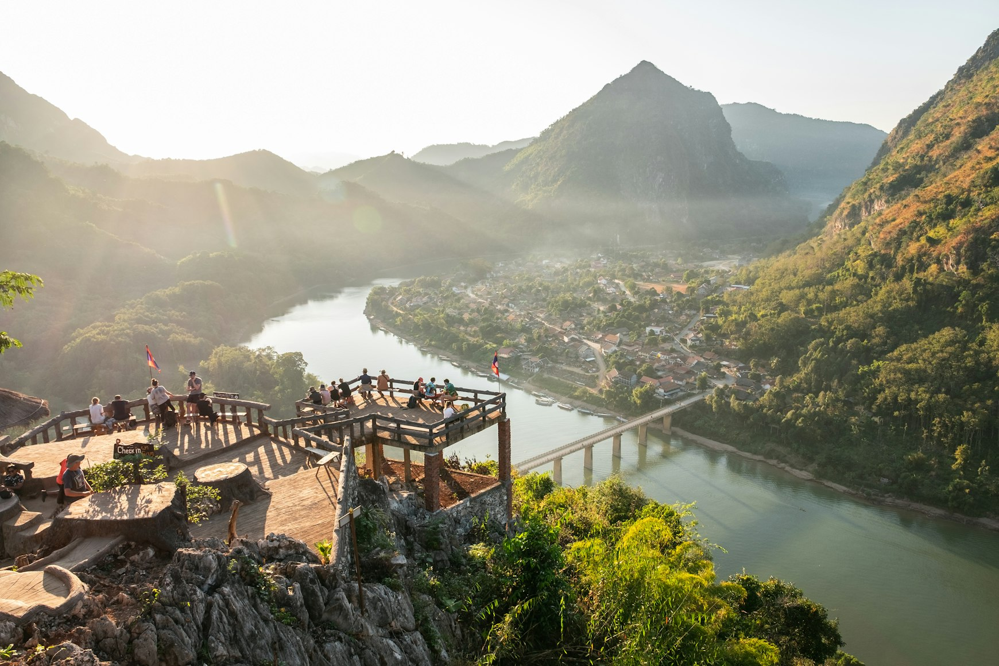
Laos does not feel like a country built entirely around tourism.
Even in its best-known places, there is still a sense of ordinary life continuing naturally: monks walking through the streets at dawn not for photographs, boats on the Mekong remaining part of everyday life, and ancient temples existing without barriers, queues, or constant noise.
It is exactly this feeling that draws many travelers toward less obvious destinations in Asia.
Traveling through Laos gradually changes the perception of distance and time itself.
The road between cities stops feeling like a transfer, evenings beside the Mekong stop feeling like accidental pauses, and small towns where “nothing happens” unexpectedly become essential parts of the route.
Much of Laos is built not around constant movement, but around the atmosphere of place.
Within a single journey, Laos combines several completely different versions of itself.
The north is mist above mountains, monasteries, and the old streets of Luang Prabang.
Central Laos is limestone landscapes, caves, and the nearly untouched regions of Hin Nam No.
The south is ancient Vat Phou, the coffee plantations of Bolaven, and the slow Mekong flowing among the 4000 Islands.
It is this constant shift in landscape, rhythm, and atmosphere that makes a route through Laos feel so complete and memorable.
After many of Southeast Asia’s more famous destinations, Laos feels unexpectedly quiet.
And it is precisely within that quietness that the country reveals itself most powerfully.